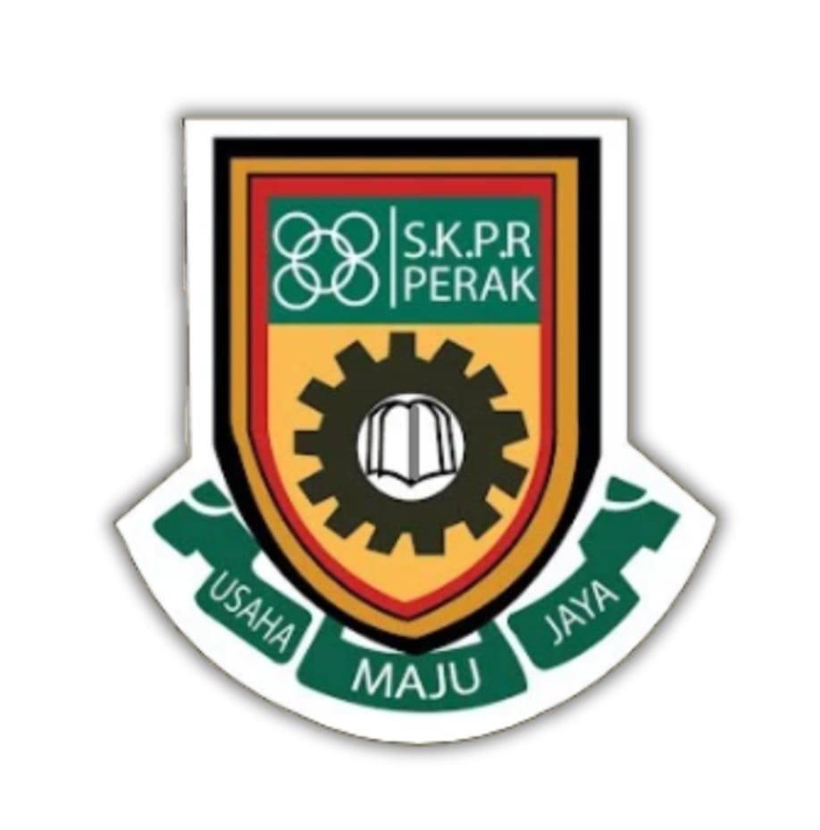

My Education
Explore my academic background and the qualifications I've achieved:
University

UiTM Cawangan Kedah
Program: Information Management
Year: 2022 - 2025
Achievements:
- Involving in managing programs FESKO.
- Last semester student in UiTM.
- Active in NGO.
Secondary School
SEKOLAH MENENGAH KEBANGSAAN SULTAN ABDULLAH
Level: Secondary School (SPM)
Year: 2017 - 2022
Achievements:
- SPM Results: 4 A 4B 1C.
- Participated in badminton, stem programs and extracurricular activities .
Primary School
SEKOLAH KEBANGSAAN PEKAN RABU
Level: Primary Education
Year: 2011 - 2016
Achievements:
- Active in school prefect.
- Participated in pantun.